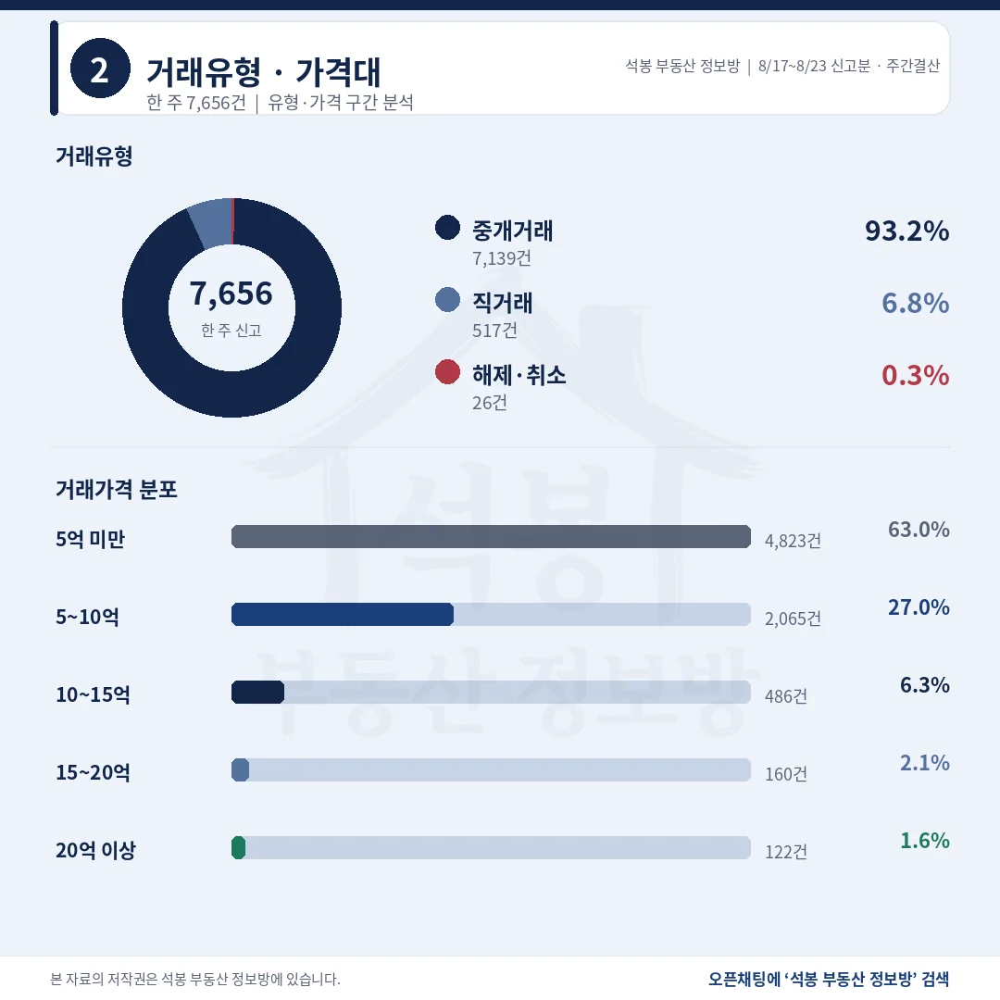
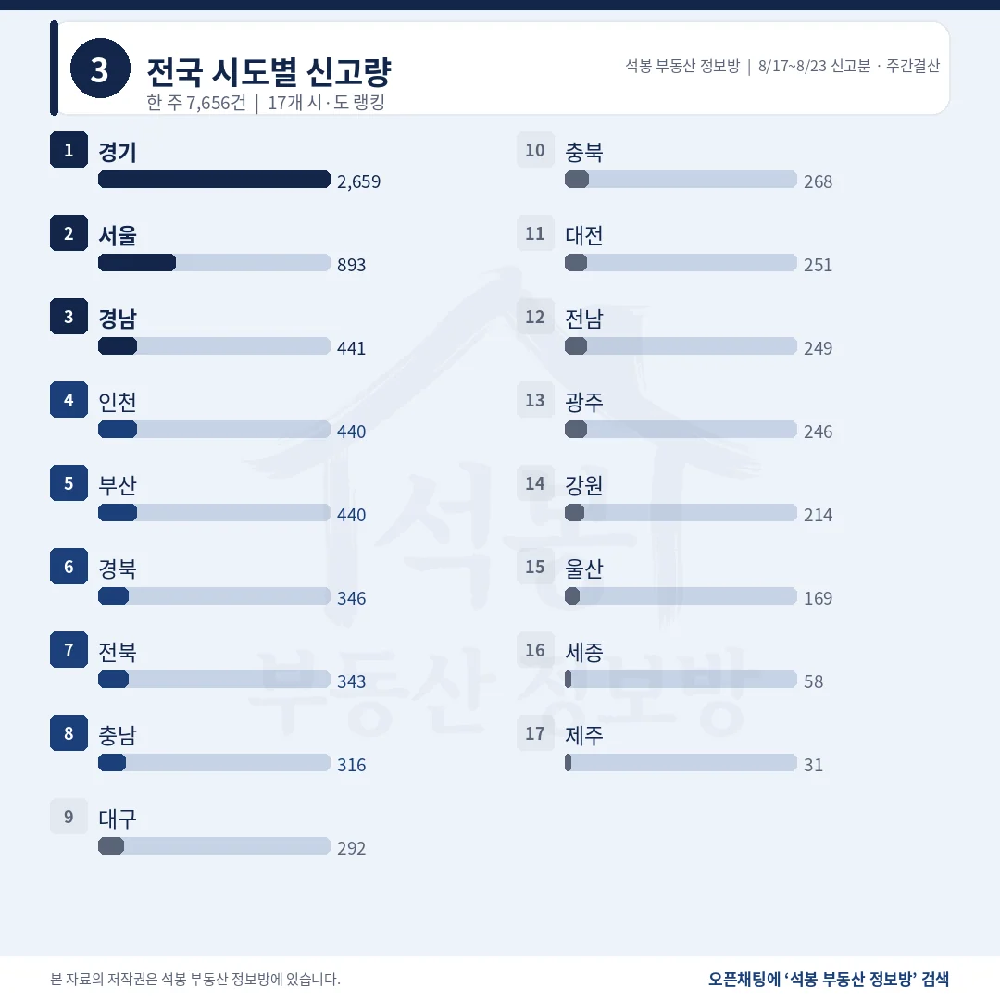
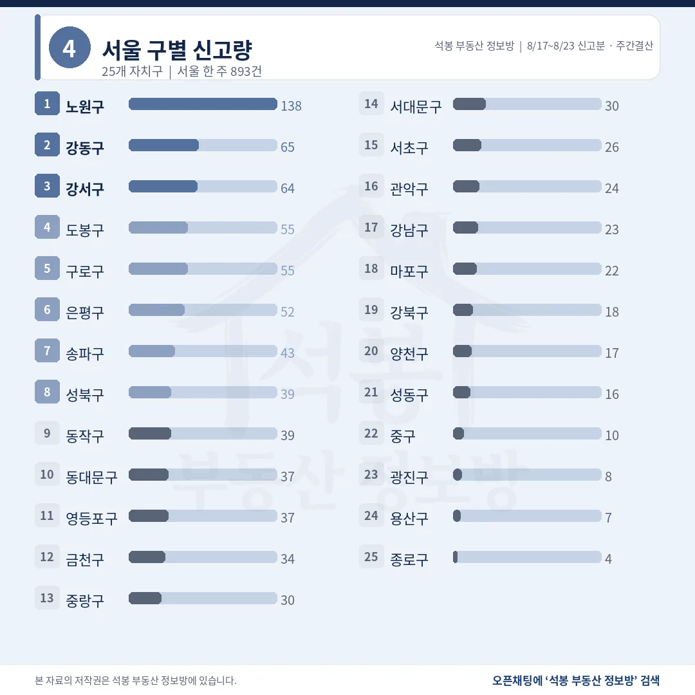
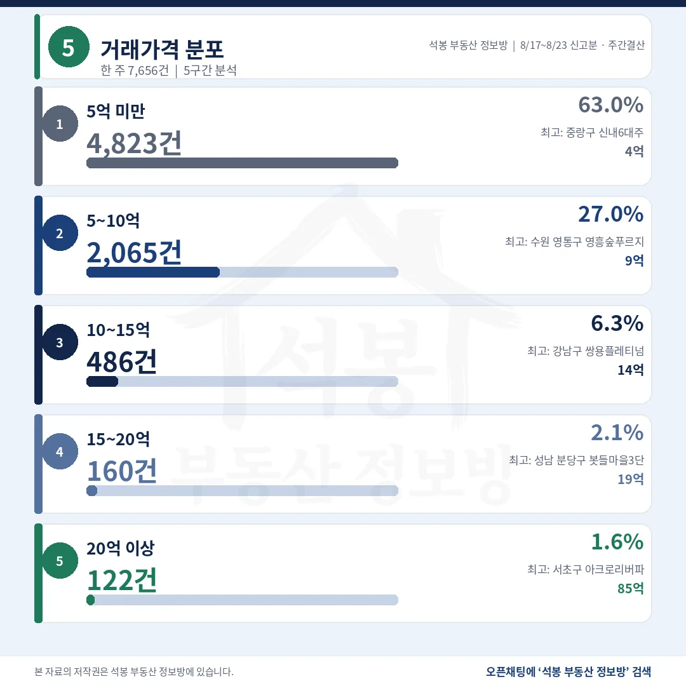
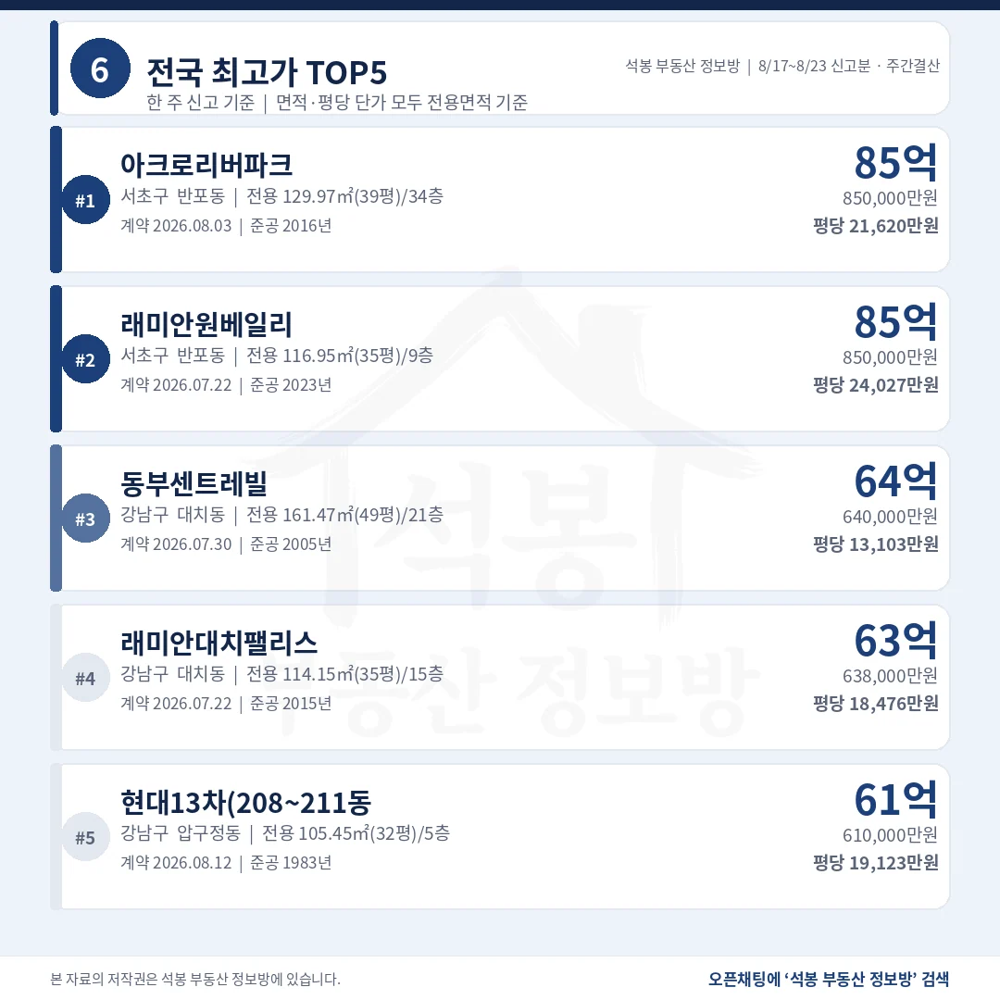
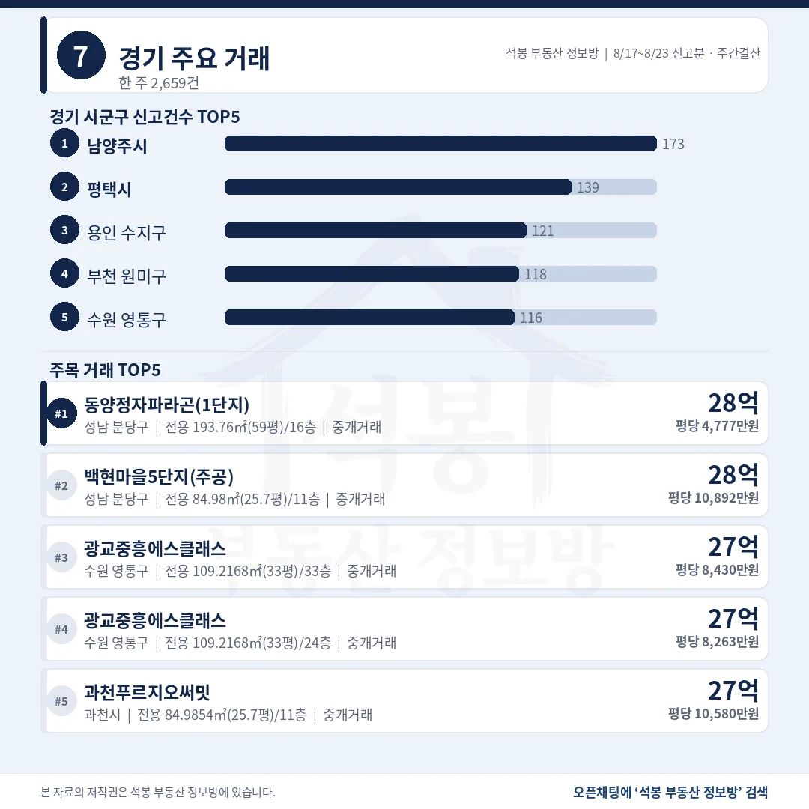
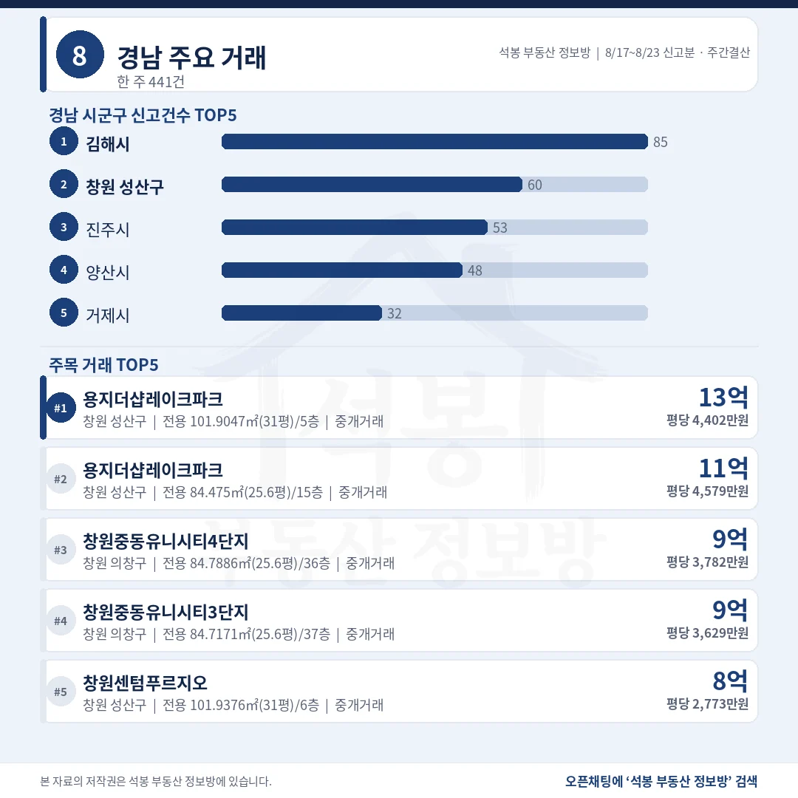
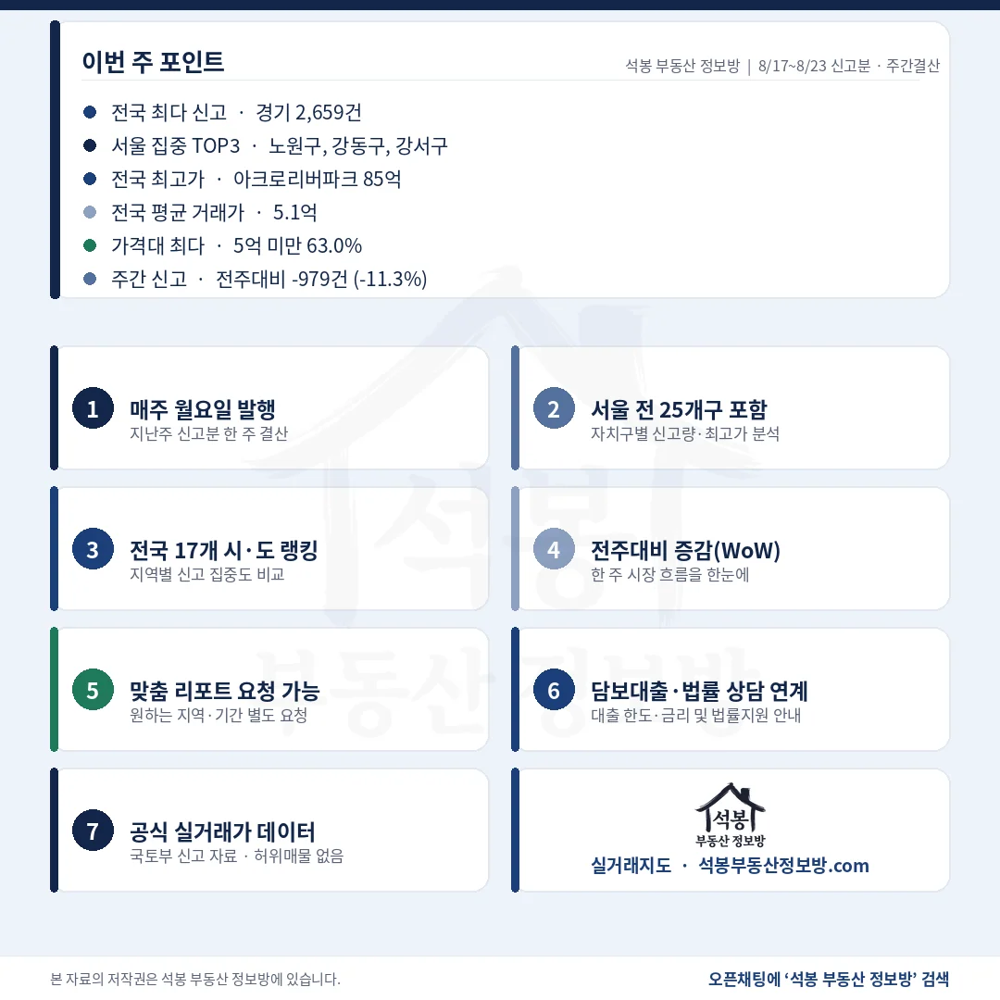

8월 17일부터 23일까지 전국 아파트 실거래 신고는 7,656건, 전주보다 979건 줄었습니다. 그런데 줄어든 몫이 전국에 고르게 퍼져 있지 않습니다. 서울에서만 486건이 빠져 감소분의 절반을 서울 한 곳이 채웠고, 경기는 142건 줄어드는 데 그쳤습니다. 8월 17일~23일 결산은 그 편중을 따라가면서 보시면 됩니다.
단지명을 누르면 그 단지의 실거래 내역과 시세를 바로 볼 수 있습니다. (면적과 평당 단가는 모두 전용면적 기준)
중개 93.2%, 5억 미만이 4,823건 63.0%

거래유형·가격대
10건 중 6건이 5억 아래, 20억 위는 122건으로 1.6%입니다.
거래유형
건수
비중
중개거래
7,139건
93.2%
직거래
517건
6.8%
해제·취소
26건
0.3%
가격대
건수
비중
구간 최고 거래
5억 미만
4,823건
63.0%
중랑 신내동 신내6대주 4.99억
5~10억
2,065건
27.0%
수원 원천동 영흥숲푸르지오파크비엔 9.98억
10~15억
486건
6.3%
강남 역삼동 쌍용플레티넘밸류 14.97억
15~20억
160건
2.1%
분당 삼평동 봇들마을3단지(주공) 19.95억
20억 이상
122건
1.6%
서초 반포동 아크로리버파크 85억
전국 중위 거래가는 3.88억, 평균은 5.08억입니다. 20억 위 122건은 전주 174건에서 52건 줄었습니다.
여기서부터는 회원에게 보여드립니다
카카오 로그인 3초면 전문을 읽을 수 있습니다. 무료입니다.
가입하시면 지역 시장조사 보고서(약식)를 2회 무료로 요청하실 수 있습니다.
이미 회원이면 같은 버튼으로 로그인만 됩니다
서울 비중이 16.0%에서 11.7%로 내려앉았습니다

전국 시도별 신고량
수도권 3,992건으로 52.1%, 절반 가까이가 지방에서 나왔습니다.
시도
신고
중위 거래가
전주비
비고
경기
2,659건
5.10억
-5.1%
쏠림 없음
서울
893건
9.14억
-35.2%
감소분 486건 전국 감소의 49.6%
경남
441건
2.35억
-15.2%
진주 53건 중 한 단지 14건
인천
440건
4.22억
-8.5%
중위 3.70억에서 상승
부산
440건
3.49억
-14.4%
쏠림 없음
경북
346건
1.77억
+7.5%
쏠림 없음
전북
343건
1.70억
+29.9%
완산구 한 단지 직거래 42건 제외 시 301건
충남
316건
1.99억
-21.6%
쏠림 없음
전북이 홀로 30% 가까이 늘었지만 전주 완산구 광진공작 42건이 8월 16일 하루에 몰린 1.5억~1.85억 직거래입니다. 이를 빼면 완산구 115건은 73건, 중위는 1.75억에서 2.15억으로 올라갑니다.
노원 138건에 중위 6.9억, 송파 43건에 29.2억

서울 구별 신고량
건수 1위와 중위 1위가 정확히 반대편에 있고, 값 차이는 4.2배입니다.
자치구
신고
중위 거래가
최다 단지 · 비고
노원구
138건
6.90억
상계주공3(고층) 12건(8.7%) 쏠림 없음
강동구
65건
14.00억
롯데캐슬퍼스트 6건
강서구
64건
9.59억
더트루엘마곡HQ 4건
도봉구
55건
5.47억
주공17단지 6건
구로구
55건
7.10억
동부골든 3건
은평구
52건
9.79억
라이프미성 5건
송파구
43건
29.20억
주공아파트 5단지 9건(20.9%) 계약일 6일에 분산 · 전부 중개
동작구
39건
15.00억
신동아리버파크 3건
송파구 한 단지 비중이 20%를 넘어 확인했습니다. 주공아파트 5단지 9건은 7월 7일부터 8월 7일까지 여섯 날짜에 나뉜 39.77억~45.75억 중개거래라 정상 물량입니다. 노원구 최다인 상계주공3(고층)도 12건뿐입니다.
반포동 85억 두 건이 동점, 평당은 2,407만원 차이

거래가격 분포

전국 최고가 TOP5
총액이 같아도 전용 39.3평과 35.4평이면 평당가는 11% 벌어집니다.
단지
위치
거래가
전용면적
평당(전용)
1 아크로 리버파크
서초 반포동
85억
129.97㎡ (39.3평)
21,620만 2016년
2 래미안 원베일리
서초 반포동
85억
116.95㎡ (35.4평)
24,027만 2023년
3 동부 센트레빌
강남 대치동
64억
161.47㎡ (48.8평)
13,103만 2005년
4 래미안 대치팰리스
강남 대치동
63.8억
114.15㎡ (34.5평)
18,476만 2015년
5 현대13차 (208~211동)
강남 압구정동
61억
105.45㎡ (31.9평)
19,123만 1983년
TOP5가 전부 서초·강남입니다. 20억을 넘긴 122건도 서울이 100건으로 82.0%, 그중 송파 32건, 서초 15건, 강남 13건 순입니다. 경기는 19건이고 분당구가 10건입니다.
남양주 173건에 중위 4.58억, 용인 수지구는 10.40억

경기 주요 거래

경남 주요 거래
건수가 많은 곳과 값이 높은 곳은 경기에서도 경남에서도 갈립니다.
지역
신고
중위 거래가
최다 단지
경기 남양주시
173건
4.58억
대명 4건
경기 평택시
139건
3.25억
힐스테이트지제역 5건
경기 용인 수지구
121건
10.40억
신봉마을 동일하이빌3단지 4건
경기 부천 원미구
118건
5.44억
한아름마을 (현대,라이프) 7건
경남 김해시
85건
2.35억
e편한세상봉황역 5건
경남 창원 성산구
60건
3.50억
대동 7건
경남 진주시
53건
3.53억
진주혁신더힐아파트 14건(26.4%) · 직거래 13건
건수 1위 남양주(4.58억)와 3위 용인 수지구(10.40억)는 두 배 넘게 벌어집니다. 진주시는 한 단지가 26.4%를 차지하고 그중 13건이 직거래라 시군 평균으로 읽기에는 무리가 있습니다.
강남3구는 150건에서 92건, 중위는 21.00억에서 27.70억

주간 포인트
구분
전주 8/10~8/16
8/17~8/23 신고분
증감
전국 신고
8,635건
7,656건
-979건 (-11.3%)
서울 신고
1,379건
893건
-486건 (-35.2%)
20억 이상
174건
122건
-52건
강남3구 신고
150건
92건
-58건
강남3구 중위
21.00억
27.70억
+6.70억
줄어든 979건 가운데 486건이 서울입니다. 전주 서울 통계에는 동작구 한 단지를 공공기관이 하루에 사들인 65건이 섞여 있었는데, 그 물량을 빼고 견줘도 서울은 32.0% 줄었습니다. 전국 신고에서 서울이 차지하는 몫은 16.0%에서 11.7%로 내려왔고, 같은 기간 경기는 5.1% 감소에 그쳤습니다. 8월 17일~23일에 거래가 식은 곳은 서울이라고 읽는 편이 정확합니다.
다만 값까지 같이 내려간 것은 아닙니다. 강남3구는 신고가 150건에서 92건으로 줄었는데 중위 거래가는 21.00억에서 27.70억으로 올랐습니다. 거래가 얇아지면 저가 물량이 먼저 사라지고 값이 큰 거래만 남아 중위값이 올라가는 일이 잦습니다. 실제로 20억을 넘긴 거래 자체는 174건에서 122건으로 줄었으니 고가 시장이 달아올랐다고 보기는 어렵습니다. 건수와 중위값이 반대로 움직인 주에는 중위값 상승을 값 상승으로 옮겨 읽지 않는 편이 안전합니다.
표 보는 법 · 직거래는 중개사를 끼지 않고 당사자끼리 한 거래입니다. 면적과 평당 단가는 모두 전용면적 기준이고, 평은 ㎡를 3.3058로 나눈 값입니다. 중위 거래가는 금액순으로 줄 세웠을 때 한가운데 값이며, 중위·평균은 해제·취소분을 빼고 계산했습니다. 건수와 비중은 카드와 같은 전체 신고 기준입니다. 8월 17일·18일·23일은 원본이 갱신되지 않아 신고가 거의 없었고, 전주도 같은 형태여서 주 단위 비교는 그대로 유효합니다.
원자료: 국토교통부 실거래가 공개시스템 (2026년 8월 17일~23일 신고분 기준, 전국 아파트 매매 7,656건) · 집계 기준일 2026-08-24 · 편집·제작: 석봉 부동산 정보방 · 신고분은 계약일과 신고일이 다를 수 있고 해제·취소가 뒤늦게 반영될 수 있습니다 · 전주(8월 10일~16일 신고분 8,635건)와는 같은 수집 범위라 그대로 비교했습니다 · 본 자료는 정보 제공 목적이며 투자 권유가 아닙니다.